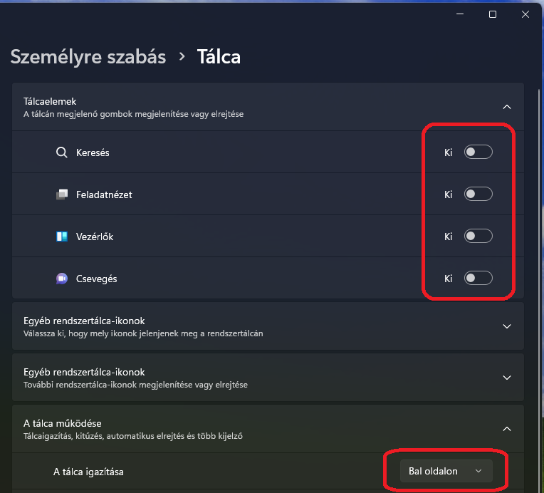
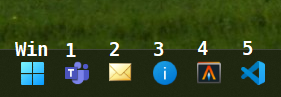
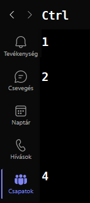
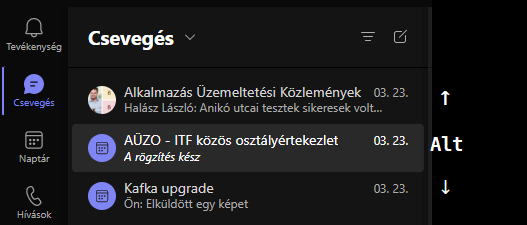
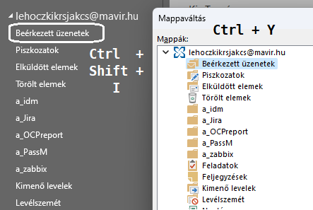
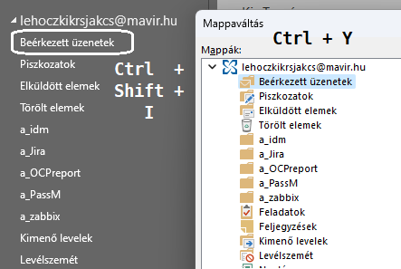

Win + 1 2 3 4 5
Work? Flow!
Win + 1 2 3 4 5
Work? Flow!
Motiváció
"Give me six hours to chop down a tree and I will spend the first four sharpening the axe."
Abraham Lincoln
A mérnök optimalizál
Kezdje a saját munkaeszközével!
A Windows valameddig alakíható, de ablakot hajlítani nehéz...
Miről fog szólni ez az előadás?
Tippek a kényelmesebb és hatékonyabb eligazodáshoz az ablakok között (és bennük).
Megmutatom, hogy nekem mi jött be, neked más lesz a jó.
Vezérelv: "Kupacolás" helyett "csempézés".
YMMV - Your Mileage May Vary
Billentyűzet > egér
Egerészni/tapipadozni nem hatékony, fárasztó.
Szem - kéz koordináció, ergonómia, RST kockázata.
10 ujj > 2 ujj
"Van rá gyorsgomb?"
Izommemória!
Miről nem fog szólni?
- Ctrl - C; Ctrl - V; Alt - Tab...
- AutoHotkey, Registry kulcsok
- Hátra, hátra, kis ütés
- ESC :wq
- Shell 😞 - talán máskor
{kind=link}
Level 0
Windows tálca
Setup
⊞ + 1,2,3,4,5 ...
Tűzd ki a tálca elejére, amit a leggyakrabban használsz!
Bónusz
A filekezelőt nem is kell kitűzni:
⊞ + E
Level 1
Csempék (tiles / snapping windows)
Interaktív csempézés:
⊞ + Z
Rendezés:
⊞ + → / ← / ↑ / ↓
Hátrány, hogy nem marad egyben a csoport...
Fókusz váltásra nincs gyorsgomb, csak az Alt + Tab...
Level 2
Több asztal
⊞ + Tab?

Különböző háttérképek, hogy tudd, hogy hol vagy éppen...
Asztal váltás:
⊞ + Ctrl + → / ←
Ablak áthelyezés asztalok között:
nincs gyorsgomb... egérrel
Level 3
Kommunikáció
Nálam az első két tálcaelem
Teams
 Outlook
 

Level 4
Böngésző
A hivatalosan támogatott böngészőnk az Edge.
ami egy Chrome álruhában, Windows integrációval
Chrome kiegészítők mennek Edge-ben!
Alap gyorsgombok
(minden böngészőben) - nagyon hatékonyak
Lap (tab) kezelés: Ctrl + 1,2,3... itt is
Ctrl + PgDn / PgUp következő / előző lap
Ctrl + T új lap, Ctrl + W lap bezárás
Ctrl + R újratöltés, F4 / F6 címsor kijelölése
Alt + ← vissza nyíl 🔙
Bónusz: "megnyitás új lapon": linken egér középső gomb!
{kind=link}
Portál-specifikus gyorsgombok
Kiegészítők
- Hirdetés blokkoló: uBlock origin
- Jelszó kezelő: Dashlane
- Bónusz: vimium (vi + Chromium)
Level 5
Ritkán használt Windows funkciók
ORDER BY usefulness DESC;
- ⊞ + L - Lezárni a gépet!!!
- ⊞ + V - vágólap kezelő, aka. Ctrl - C history
- ⊞ + A - Gyors beállítások (hang, bluetooth... )
- ⊞ + Shift + S - képernyőkép: - Jira kommentbe / Teams üzenetbe beilleszthető
- ⊞ + X - vezérlők
Level 6
Admin szekció
- Hibernálás (ha már az "Alvó állapot" le van tiltva...)
- Microsoft Powertoys
- CapsLock remap Ctrl -ra
- Powertoys Run
- Awake
- Quick Accent
- Shortcut Guide: ⊞ + ?
Bonus Level
Bonus Level
Kincskeresési specifikáció:
A kivetített anyag és a verziókezelt forráskód publikus az interneten.
Öt KUPON -t rejtettem el benne.
Lehet hogy itt: tenyleg itt van! KUPON{P4ge_50urc3_FTW}
Az első három megtaláló, aki legalább hármat talál, és e-mailben elküldi, beválthatja őket egy italra a legközelebbi OUTFIG BARizón.
Opcionális tételek:
- Találd meg mind az öt kupont!
- Nyiss jegyet, és küldj hozzájuk javítást, amivel láthatóak lesznek!
- Másold le az egészet, és publikálj egy példányt, amiben láthatóak!
GL && HF
Credits
Rejtett dia
KUPON{h1dd3n_sl1d3}